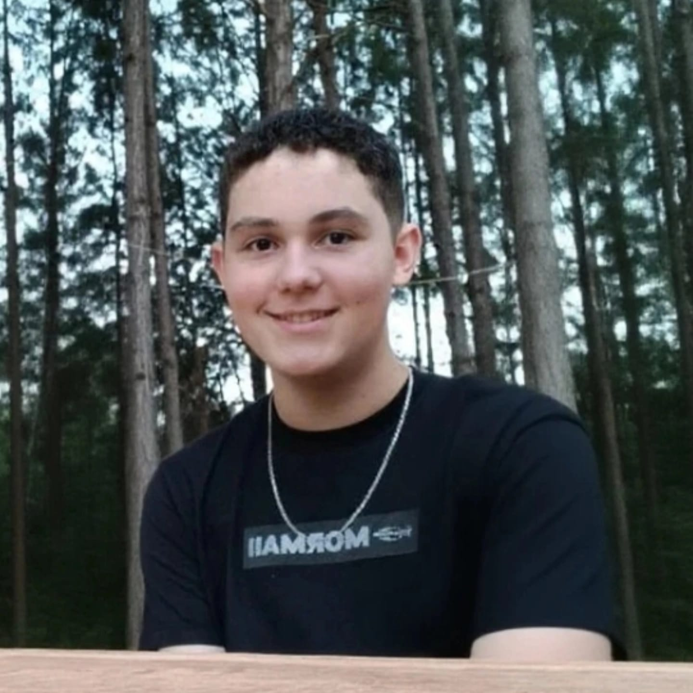
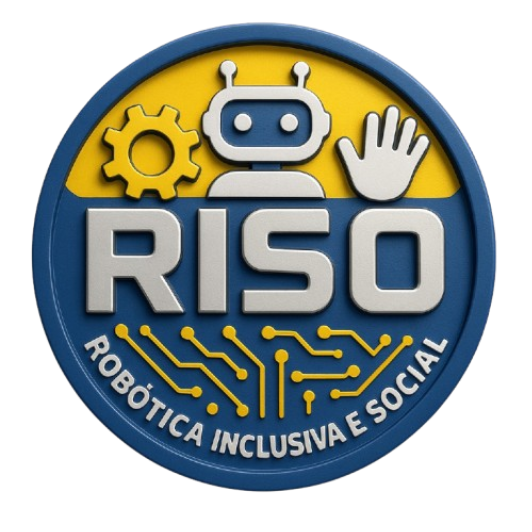
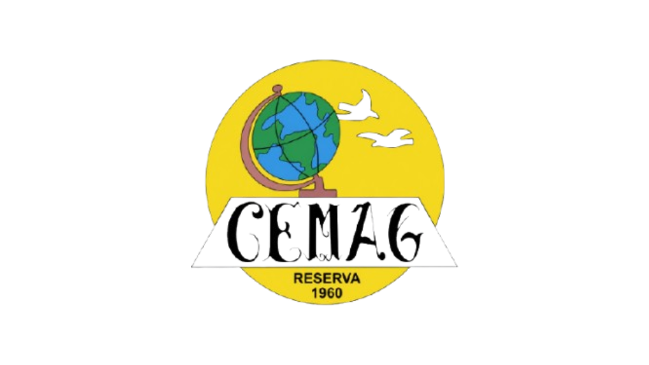
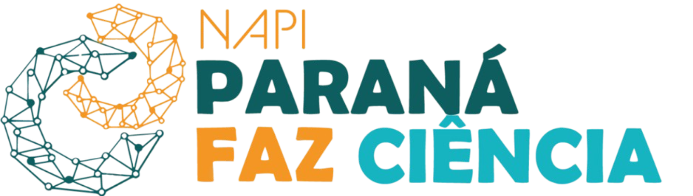
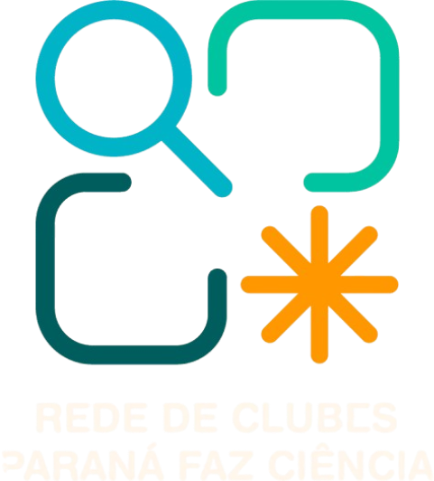
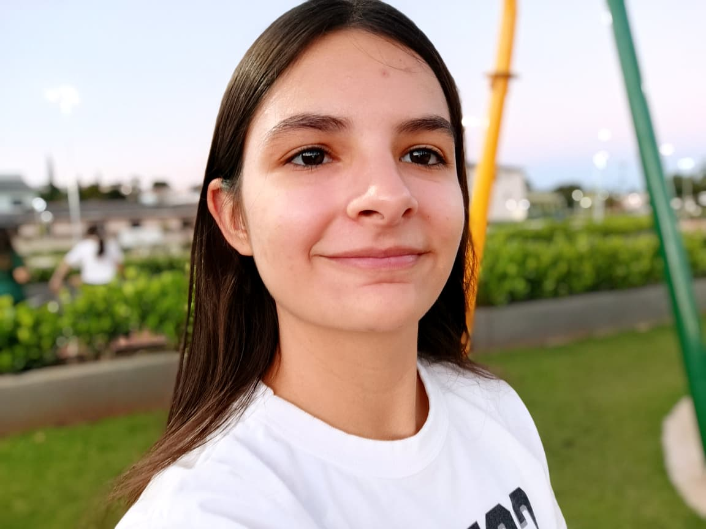

Arthur Eduardo Porfirio Parra
Idade: 15 anos | 1º ano. Gosto de estudar matemática e robótica. Meus objetivos incluem estudar, trabalhar e morar fora do país.
Currículo Lattes



Bem-vindo(a) ao nosso portal!
Criado em 2024 no Colégio Estadual Manoel Antônio Gomes, em Reserva, o clube RISO significa Robótica Inclusiva e Social Transformando Vidas. Nosso objetivo é promover a inclusão através da tecnologia.

Idade: 15 anos | 1º ano. Gosto de estudar matemática e robótica. Meus objetivos incluem estudar, trabalhar e morar fora do país.
Currículo Lattes
Idade: 16 anos | 2ºB.Olá! O meu nome é Bárbara, sou estudante no colégio cemag. O que mais gosto de estudar são matérias relacionadas com matemática, ciências da natureza e tecnologias, pois adoro aprender como o mundo funciona e descobrir coisas novas todos os dias. Para mim, ser um aluno CLUBISTA significa ter protagonismo, ser curioso, trabalhar bem em equipe e ter o compromisso de crescer junto com os meus colegas, participando ativamente nos projetos e desafios propostos. Nos meus tempos livres, os meus passatempos favoritos são estudar, ler, praticar atividades físicas e jogar. Os meus principais objetivos para o futuro são aprofundar os meus conhecimentos, concluir os meus estudos com distinção, me formar em engenharia mecatrônica e desenvolver competências para fazer a diferença na sociedade. .
“Na vida, não existe nada a temer, mas a entender.”-Marie Curie
Currículo Lattes
Idade: 17 anos | 3ºB. Tenho interesse na área musical e tecnológica. Minha meta é ser um mecânico de motos excelente.
Currículo Lattes